An Integrated Geoscientific Framework for Surface Water Catchment Protection in Arid and Semi-Arid Regions
This book presents an integrated assessment of water-resource protection in the Fontaine des Gazelles reservoir and its contributing Oued El-Hai watershed in northeastern Algeria. Utilizing Geographic Information Systems (GIS), travel-time modeling, and spatial vulnerability mapping, it establishes differentiated protection perimeters (Immediate, Close, and Remote) to safeguard vital drinking and irrigation water supplies.
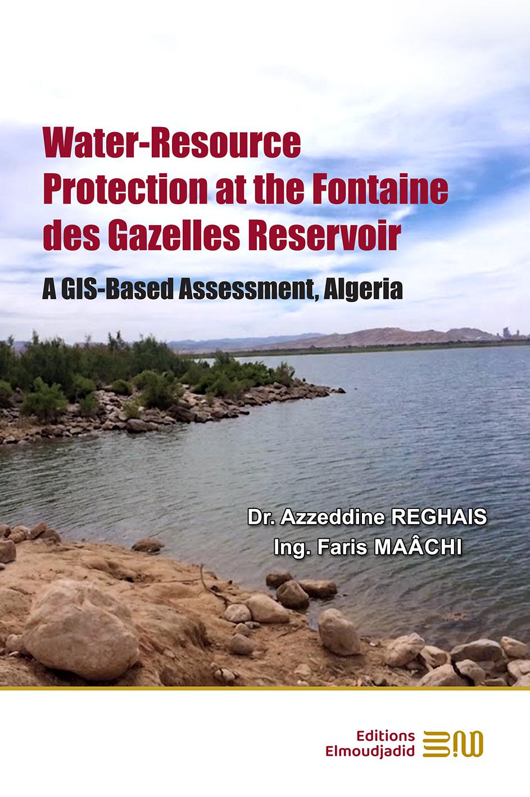
Fundamental quantitative parameters and physio-hydrological metrics derived for the Oued El-Hai catchment and dam
Extends across Batna and Biskra provinces in the Aurès mountain ranges.
Strategic reservoir supplying domestic drinking water and agricultural irrigation in El-Kantara & Ain Naga.
Hierarchical protection zones: Immediate (Zone I), Close (Zone II), and Remote (Zone III).
Spatially calculated runoff travel time from any catchment point to the reservoir shoreline.
Browse detailed scientific summaries and key takeaways across all 6 chapters along with thematic GIS maps
Chapter 1 establishes the theoretical and environmental foundations for protecting surface water reservoirs in arid and semi-arid environments, emphasizing whole-catchment protection rather than isolated geometric buffer zones around the dam.
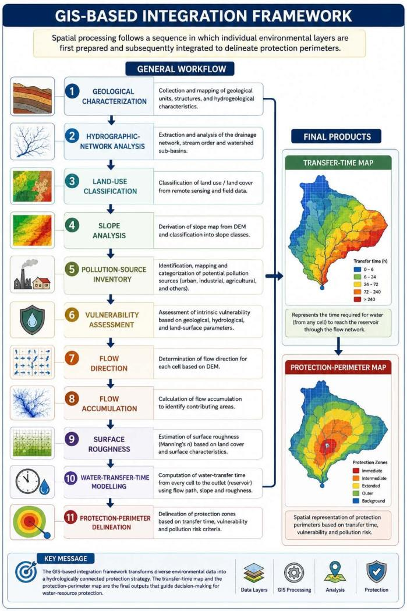
Figure 10: GIS Integration WorkflowA comprehensive physiographic and environmental characterization of the Oued El-Hai watershed spanning Batna and Biskra provinces (including Ain Touta, El-Kantara, and Berni agricultural sectors).
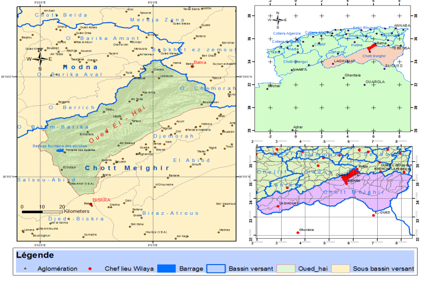
Figure 1: Watershed Location Map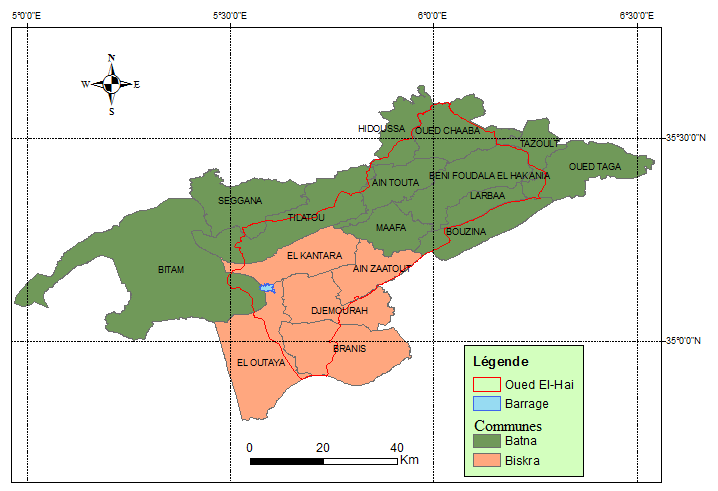
Figure 2: Administrative Sub-divisionsDetailed stratigraphic and structural mapping from Triassic evaporites to Quaternary deposits, evaluating how geological formations and fault networks govern runoff generation, infiltration, and groundwater-surface water connectivity.
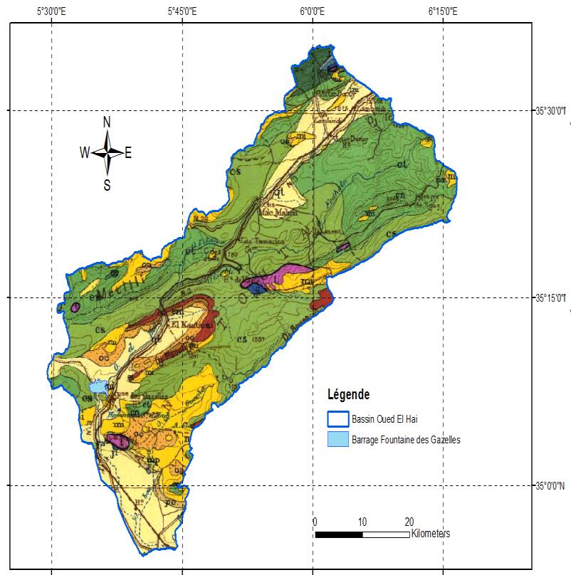
Figure 3: Regional Geological Map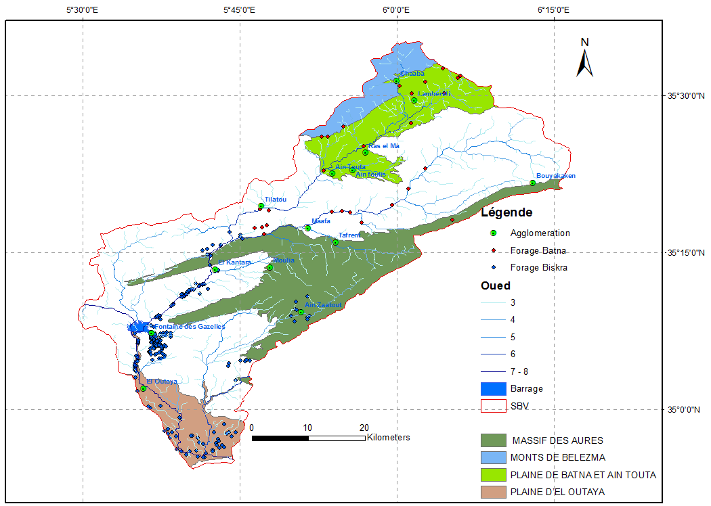
Figure 4: Aquifer Systems MapQuantitative morphometric analysis, drainage network hierarchy, slope geometry, and estimation of watershed hydrological response times.
| Morphometric Parameter | Symbol / Unit | Observed Value | Hydrological Significance |
|---|---|---|---|
| Gravelius Compactness Coefficient | Kc | 1.45 - 1.62 | Elongated catchment geometry moderating flood peak concentration relative to circular basins. |
| Drainage Density | Dd (km/km²) | 2.1 - 3.4 km/km² | Moderate to high drainage density reflecting rapid surface runoff generation during rainstorms. |
| Concentration / Transfer Time | Tc (hours) | ~ 12 - 18 hours | Total time for runoff from the farthest watershed boundary to reach the outlet. |
| Torrentiality Coefficient | Ct | High in headwaters | Pronounced sheet erosion and heavy sediment transport into the reservoir. |
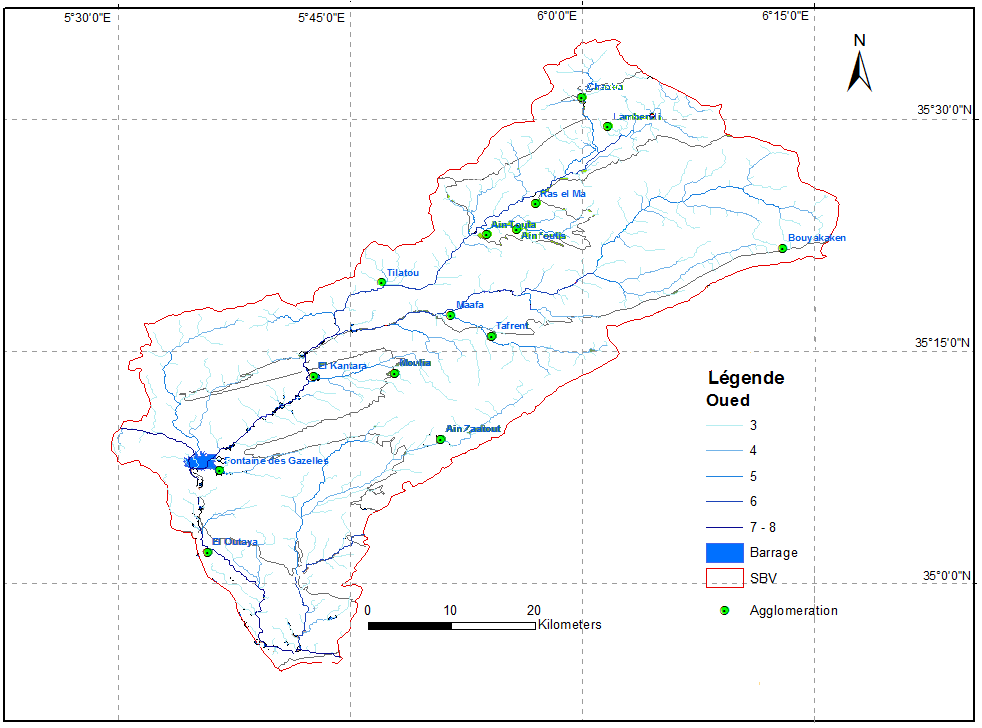
Figure 6: Hydrographic Network MapEstablishes the spatially explicit GIS framework that calculates "Water Transfer Time" across the terrain rather than relying on static circular distance buffers.
Practical GIS implementation for the Fontaine des Gazelles reservoir, producing the final spatially differentiated Immediate, Close, and Remote Protection Perimeters.
Directly encompasses the reservoir water body and shoreline. Strict exclusion of all human construction, agricultural dumping, or unauthorized entry.
Covers areas where runoff transfer time to the reservoir is less than 1 hour (< 1h). Regulates fertilizer, pesticide, and urban effluent discharges.
Extends across the broader contributing catchment (travel time 1 to 45 hours). Subject to environmental monitoring and catchment-wide vigilance.
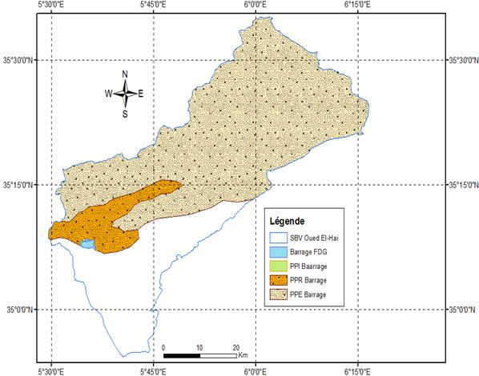
Figure 15: Protection Perimeters Map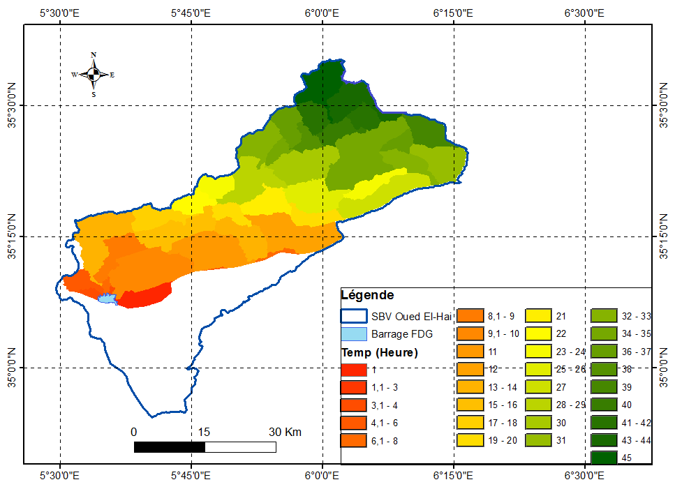
Figure 14: Water Transfer Time MapHow surface elevation, Manning roughness, and slope gradients are integrated into spatial transfer time models
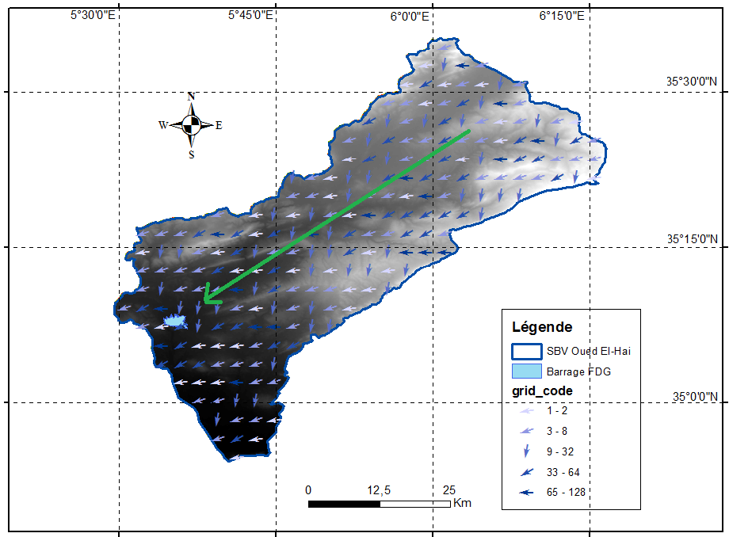
Determines the steepest downhill routing path for surface water from each elevation cell.
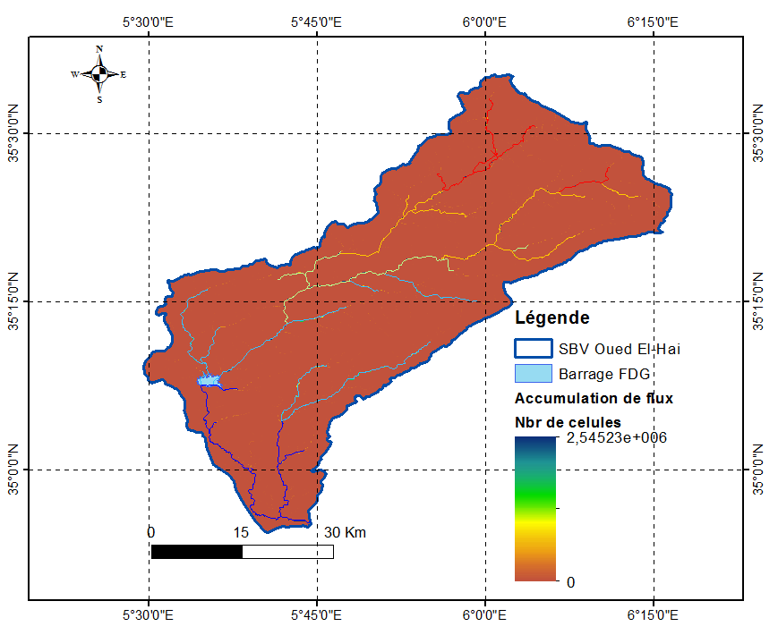
Calculates accumulated cell counts to locate stream channels and concentration points.
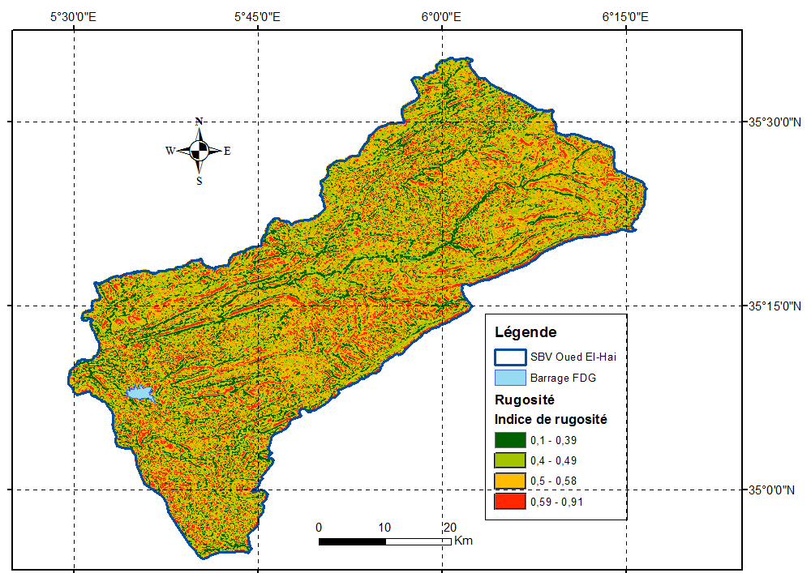
Assigns roughness coefficients (n) based on Land Cover to model hydraulic resistance.
Produces travel time zones enabling time-based delineation of Close and Remote protection perimeters.
Explore all high-resolution figures, geological maps, and GIS layers included in the academic monograph (click to enlarge)
Geographical Location Map
Administrative Boundaries
Regional Geology
Main Aquifer Systems
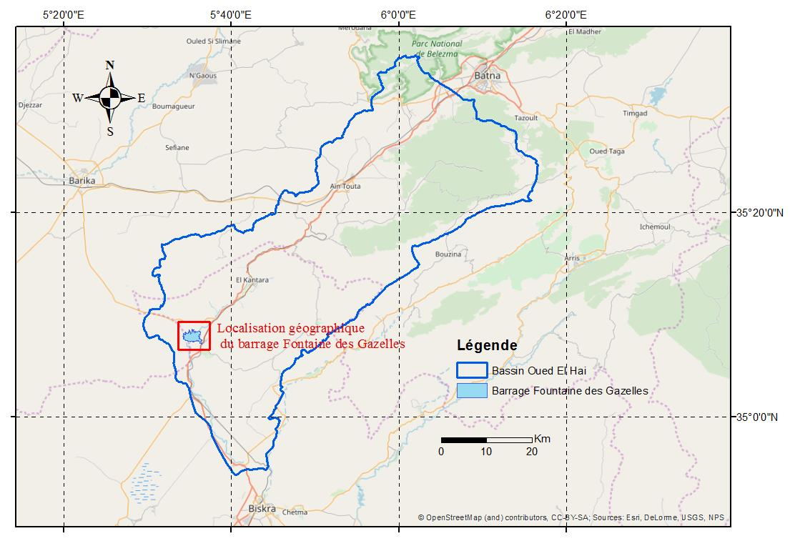
Fontaine des Gazelles Dam Setting
Hydrographic Drainage Network
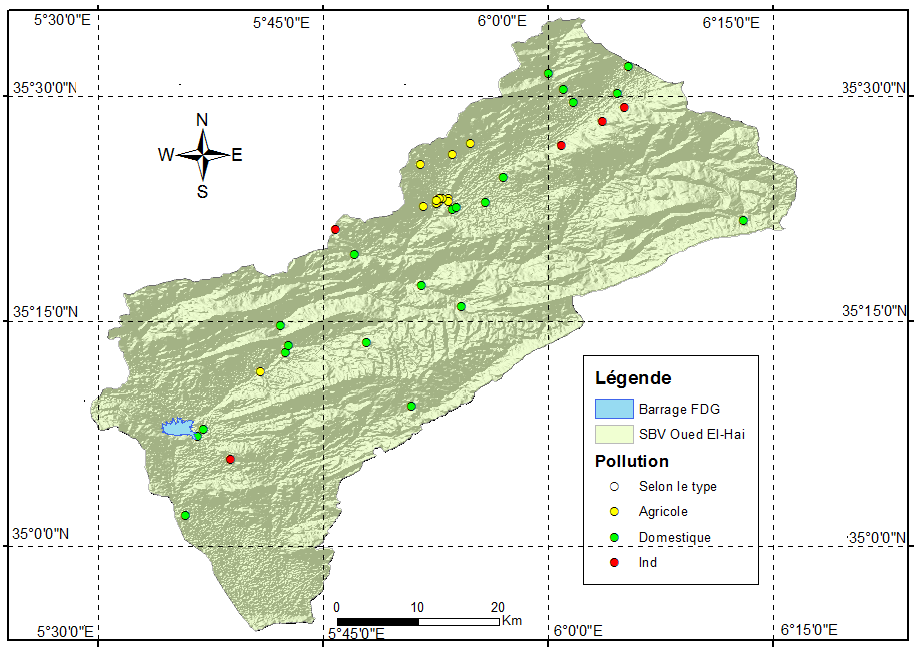
Pollution Inventory Map
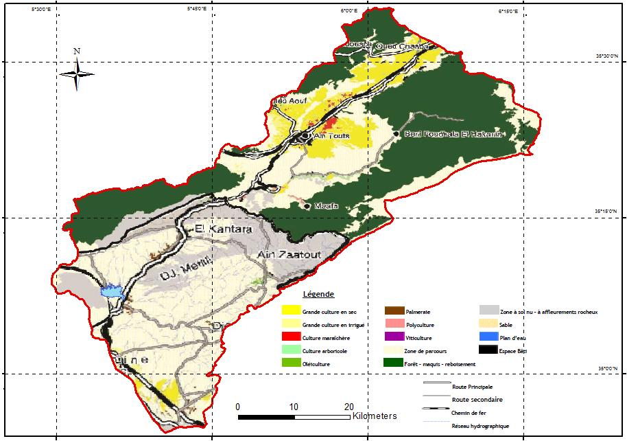
Land Use / Land Cover
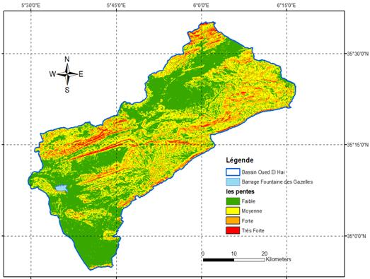
Terrain Slope Gradients
GIS Integration Framework
Water Transfer Time Map
Delineated Protection Zones Map